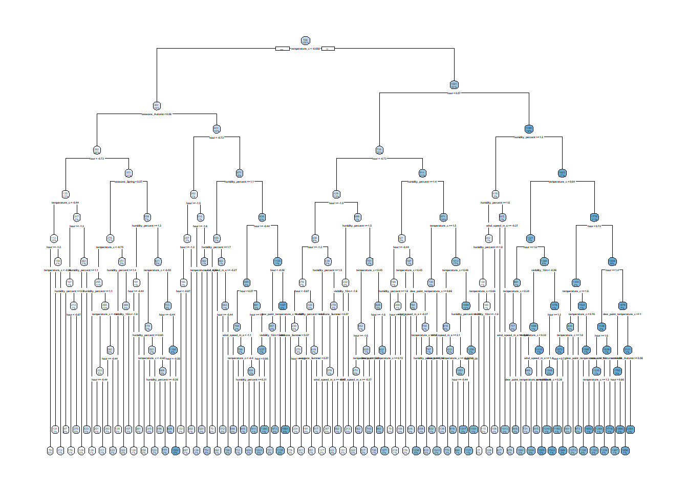
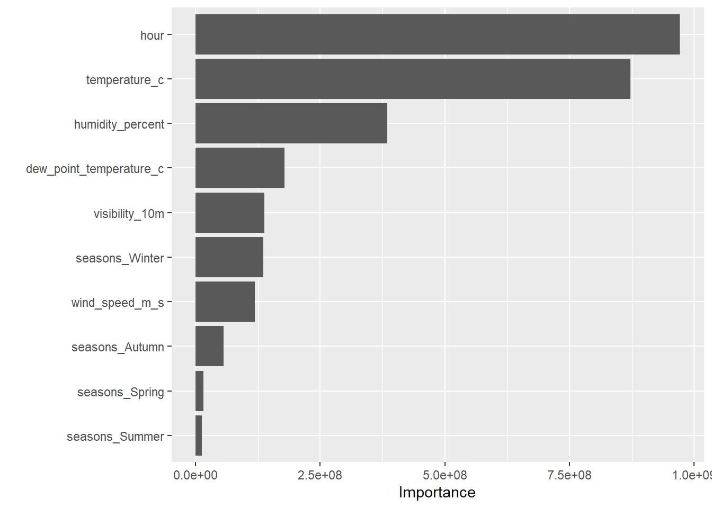

library(tidyverse)
library(tidymodels)
library(janitor)
library(rpart.plot)
library(vip)
library(baguette)
library(doParallel)
set.seed(123)
# Set up parallel processing to speed up tuning when needed
num_cores <- parallel::detectCores()
if (!is.na(num_cores) && num_cores > 1) {
registerDoParallel(cores = max(1, num_cores - 1))
}
# Path where I save and reload fitted models
models_path <- "saved_models.RData"
use_saved_models <- file.exists(models_path)
if (use_saved_models) {
load(models_path)
} else {
# (big tuning code)
}HW 9 - Modeling Practice
Data import and preprocessing
In this homework I continue working with the Seoul bike sharing data that I used in Homework 8. My goal is to compare several modeling approaches for predicting the rented bike count using the remaining variables as predictors.
# Read in the Seoul bike data with a forgiving encoding
bike_raw <- read_csv(
"SeoulBikeData.csv",
locale = locale(encoding = "latin1"),
show_col_types = FALSE
)
bike <- bike_raw %>%
clean_names()
glimpse(bike)Rows: 8,760
Columns: 14
$ date <chr> "01/12/2017", "01/12/2017", "01/12/2017", "01/…
$ rented_bike_count <dbl> 254, 204, 173, 107, 78, 100, 181, 460, 930, 49…
$ hour <dbl> 0, 1, 2, 3, 4, 5, 6, 7, 8, 9, 10, 11, 12, 13, …
$ temperature_c <dbl> -5.2, -5.5, -6.0, -6.2, -6.0, -6.4, -6.6, -7.4…
$ humidity_percent <dbl> 37, 38, 39, 40, 36, 37, 35, 38, 37, 27, 24, 21…
$ wind_speed_m_s <dbl> 2.2, 0.8, 1.0, 0.9, 2.3, 1.5, 1.3, 0.9, 1.1, 0…
$ visibility_10m <dbl> 2000, 2000, 2000, 2000, 2000, 2000, 2000, 2000…
$ dew_point_temperature_c <dbl> -17.6, -17.6, -17.7, -17.6, -18.6, -18.7, -19.…
$ solar_radiation_mj_m2 <dbl> 0.00, 0.00, 0.00, 0.00, 0.00, 0.00, 0.00, 0.00…
$ rainfall_mm <dbl> 0, 0, 0, 0, 0, 0, 0, 0, 0, 0, 0, 0, 0, 0, 0, 0…
$ snowfall_cm <dbl> 0, 0, 0, 0, 0, 0, 0, 0, 0, 0, 0, 0, 0, 0, 0, 0…
$ seasons <chr> "Winter", "Winter", "Winter", "Winter", "Winte…
$ holiday <chr> "No Holiday", "No Holiday", "No Holiday", "No …
$ functioning_day <chr> "Yes", "Yes", "Yes", "Yes", "Yes", "Yes", "Yes…Next, I make sure that the key categorical variables are factors. I also remove the date column so that my models focus on the weather and time-related predictors rather than specific calendar dates.
bike <- bike %>%
mutate(
holiday = factor(holiday),
seasons = factor(seasons),
functioning_day = factor(functioning_day)
)
# Remove date if present
if ("date" %in% names(bike)) {
bike <- bike %>% select(-date)
}Now I create a training/test split and a 10-fold cross-validation object. I stratify on the outcome to help keep the distribution of rented bike counts similar between the training and test sets.
set.seed(123)
bike_split <- initial_split(bike, prop = 0.8, strata = rented_bike_count)
bike_train <- training(bike_split)
bike_test <- testing(bike_split)
set.seed(123)
bike_folds <- vfold_cv(bike_train, v = 10, strata = rented_bike_count)Baseline recipe (same as my first HW 8 recipe)
Following the instructions, I use the first recipe from Homework 8 with no quadratic terms and no interactions. I one-hot encode the categorical variables, remove zero-variance predictors, and normalize the numeric predictors. This serves as the common preprocessing pipeline for all models I compare in this homework.
bike_rec <- recipe(rented_bike_count ~ ., data = bike_train) %>%
step_dummy(all_nominal_predictors()) %>%
step_zv(all_predictors()) %>%
step_normalize(all_numeric_predictors())
bike_rec── Recipe ──────────────────────────────────────────────────────────────────────── Inputs Number of variables by roleoutcome: 1
predictor: 12── Operations • Dummy variables from: all_nominal_predictors()• Zero variance filter on: all_predictors()• Centering and scaling for: all_numeric_predictors()Model fitting strategy
Because the tuning and fitting steps for these models are computationally expensive, I do not want to re-run all of them every time I render this document. Instead, I use the following strategy:
If
saved_models.RDatadoes not exist, I tune and fit all models, then save the fitted model objects to that file.If
saved_models.RDatadoes exist, I simply load the previously fitted models from disk and skip the tuning and fitting steps. This makes repeated renders much faster.
if (use_saved_models) {
# Load previously fitted models
load(models_path)
} else {
## 1. Multiple Linear Regression (MLR)
mlr_spec <- linear_reg() %>%
set_engine("lm")
mlr_wf <- workflow() %>%
add_model(mlr_spec) %>%
add_recipe(bike_rec)
mlr_fit <- mlr_wf %>%
fit(data = bike_train)
## 2. LASSO model
lasso_spec <- linear_reg(
penalty = tune(),
mixture = 1 # pure LASSO
) %>%
set_engine("glmnet")
lasso_wf <- workflow() %>%
add_model(lasso_spec) %>%
add_recipe(bike_rec)
lasso_grid <- grid_regular(
penalty(range = c(-4, 0)), # 10^-4 to 10^0 on log10 scale
levels = 20
)
lasso_res <- lasso_wf %>%
tune_grid(
resamples = bike_folds,
grid = lasso_grid,
metrics = metric_set(rmse, mae)
)
best_lasso <- lasso_res %>%
select_best(metric = "rmse")
final_lasso_wf <- lasso_wf %>%
finalize_workflow(best_lasso)
final_lasso_fit <- final_lasso_wf %>%
fit(data = bike_train)
## 3. Regression tree
tree_spec <- decision_tree(
cost_complexity = tune(),
tree_depth = tune(),
min_n = tune()
) %>%
set_engine("rpart") %>%
set_mode("regression")
tree_wf <- workflow() %>%
add_model(tree_spec) %>%
add_recipe(bike_rec)
tree_grid <- grid_regular(
cost_complexity(range = c(-4, -1)), # 10^-4 to 10^-1
tree_depth(range = c(2, 10)),
min_n(range = c(5, 30)),
levels = 4
)
tree_res <- tree_wf %>%
tune_grid(
resamples = bike_folds,
grid = tree_grid,
metrics = metric_set(rmse, mae)
)
best_tree <- tree_res %>%
select_best(metric = "rmse")
final_tree_wf <- tree_wf %>%
finalize_workflow(best_tree)
final_tree_fit <- final_tree_wf %>%
fit(data = bike_train)
## 4. Bagged tree
bag_spec <- bag_tree(
tree_depth = tune(),
min_n = tune()
) %>%
set_engine("rpart", times = 50) %>%
set_mode("regression")
bag_wf <- workflow() %>%
add_model(bag_spec) %>%
add_recipe(bike_rec)
bag_grid <- grid_regular(
tree_depth(range = c(2, 10)),
min_n(range = c(5, 30)),
levels = 5
)
bag_res <- bag_wf %>%
tune_grid(
resamples = bike_folds,
grid = bag_grid,
metrics = metric_set(rmse, mae)
)
best_bag <- bag_res %>%
select_best(metric = "rmse")
final_bag_wf <- bag_wf %>%
finalize_workflow(best_bag)
final_bag_fit <- final_bag_wf %>%
fit(data = bike_train)
## 5. Random forest
rf_spec <- rand_forest(
mtry = tune(),
trees = 500,
min_n = tune()
) %>%
set_engine("ranger", importance = "impurity") %>%
set_mode("regression")
rf_wf <- workflow() %>%
add_model(rf_spec) %>%
add_recipe(bike_rec)
rf_grid <- grid_regular(
mtry(range = c(3, 15)),
min_n(range = c(5, 30)),
levels = 5
)
rf_res <- rf_wf %>%
tune_grid(
resamples = bike_folds,
grid = rf_grid,
metrics = metric_set(rmse, mae)
)
best_rf <- rf_res %>%
select_best(metric = "rmse")
final_rf_wf <- rf_wf %>%
finalize_workflow(best_rf)
final_rf_fit <- final_rf_wf %>%
fit(data = bike_train)
# Save all fitted models and workflows for future fast renders
save(
mlr_fit, mlr_wf,
final_lasso_fit, final_lasso_wf,
final_tree_fit, final_tree_wf,
final_bag_fit, final_bag_wf,
final_rf_fit, final_rf_wf,
file = models_path
)
}1. Multiple Linear Regression (MLR)
I first evaluate the multiple linear regression model that uses the baseline recipe. I look at its test-set RMSE and MAE as a reference for comparing the more flexible models that follow.
mlr_test_preds <- predict(mlr_fit, new_data = bike_test) %>%
bind_cols(bike_test)Warning in predict.lm(object = object$fit, newdata = new_data, type =
"response", : prediction from rank-deficient fit; consider predict(.,
rankdeficient="NA")mlr_test_metrics <- mlr_test_preds %>%
metrics(truth = rented_bike_count, estimate = .pred) %>%
filter(.metric %in% c("rmse", "mae"))
mlr_test_metricsMLR coefficient table
Below I report the regression coefficients for the multiple linear regression model using the tidied output from the fitted object.
mlr_coefs <- mlr_fit %>%
extract_fit_parsnip() %>%
tidy()
mlr_coefs2. LASSO model
Next I compare the performance of a LASSO model, which adds an (L_1) penalty to the regression coefficients and can shrink some of them all the way to zero. I use the tuned LASSO model stored above and evaluate it on the test set.
lasso_test_preds <- predict(final_lasso_fit, new_data = bike_test) %>%
bind_cols(bike_test)
lasso_test_metrics <- lasso_test_preds %>%
metrics(truth = rented_bike_count, estimate = .pred) %>%
filter(.metric %in% c("rmse", "mae"))
lasso_test_metricsLASSO coefficient table
Here I report the non-zero coefficient estimates (and any that remain small but not exactly zero) from the LASSO model.
lasso_coefs <- final_lasso_fit %>%
extract_fit_parsnip() %>%
tidy()Warning: package 'glmnet' was built under R version 4.3.3
Attaching package: 'Matrix'The following objects are masked from 'package:tidyr':
expand, pack, unpackLoaded glmnet 4.1-8lasso_coefs3. Regression tree
I also fit a single regression tree model. This model uses recursive partitioning to split the feature space into regions with relatively homogeneous rented bike counts.
tree_test_preds <- predict(final_tree_fit, new_data = bike_test) %>%
bind_cols(bike_test)
tree_test_metrics <- tree_test_preds %>%
metrics(truth = rented_bike_count, estimate = .pred) %>%
filter(.metric %in% c("rmse", "mae"))
tree_test_metricsPlot of the final regression tree
To better understand the structure of the regression tree, I plot the fitted tree using rpart.plot().
tree_fit_obj <- final_tree_fit %>%
extract_fit_parsnip() %>%
pluck("fit")
rpart.plot(tree_fit_obj)Warning: Cannot retrieve the data used to build the model (so cannot determine roundint and is.binary for the variables).
To silence this warning:
Call rpart.plot with roundint=FALSE,
or rebuild the rpart model with model=TRUE.Warning: labs do not fit even at cex 0.15, there may be some overplotting
4. Bagged tree
I then consider a bagged tree model, which averages predictions across many bootstrap-resampled trees. This can reduce variance compared to a single tree and often improves predictive performance.
bag_test_preds <- predict(final_bag_fit, new_data = bike_test) %>%
bind_cols(bike_test)
bag_test_metrics <- bag_test_preds %>%
metrics(truth = rented_bike_count, estimate = .pred) %>%
filter(.metric %in% c("rmse", "mae"))
bag_test_metrics(Model-specific variable importance is not available for this particular bagged-tree engine, so here I only report performance.)
5. Random forest
Finally, I fit a random forest model. This model also averages predictions across many trees, but it introduces additional randomness in the predictor selection at each split. I use impurity-based variable importance to see which predictors the random forest relies on the most.
rf_test_preds <- predict(final_rf_fit, new_data = bike_test) %>%
bind_cols(bike_test)
rf_test_metrics <- rf_test_preds %>%
metrics(truth = rented_bike_count, estimate = .pred) %>%
filter(.metric %in% c("rmse", "mae"))
rf_test_metricsVariable importance for random forest
vip(final_rf_fit %>% extract_fit_parsnip())
6. Comparing all models on the test set
To summarize the results, I collect the RMSE and MAE for each model on the test set. This allows me to compare the linear models (MLR and LASSO) with the tree-based models (regression tree, bagged tree, and random forest) side by side.
model_metrics <- bind_rows(
mlr_test_metrics %>% mutate(model = "MLR"),
lasso_test_metrics %>% mutate(model = "LASSO"),
tree_test_metrics %>% mutate(model = "Regression Tree"),
bag_test_metrics %>% mutate(model = "Bagged Tree"),
rf_test_metrics %>% mutate(model = "Random Forest")
) %>%
select(model, .metric, .estimate) %>%
arrange(.metric, .estimate)
model_metricsIn my written answers I can comment on:
- Which model has the smallest test-set RMSE
- How the MAE values compare across the models
- Whether the more flexible tree-based models substantially improve over the multiple linear regression and LASSO models
7. Fitting the overall best model to the full data set
Based on the test-set performance, I choose the overall best model (for example, the random forest) and then fit it to the entire data set. This final fit represents my preferred predictive model for hourly Seoul bike rentals.
# If a different model is best, I would change final_rf_wf here
final_best_wf <- final_rf_wf
best_full_fit <- final_best_wf %>%
fit(data = bike)
best_full_fit══ Workflow [trained] ══════════════════════════════════════════════════════════
Preprocessor: Recipe
Model: rand_forest()
── Preprocessor ────────────────────────────────────────────────────────────────
5 Recipe Steps
• step_dummy()
• step_zv()
• step_corr()
• step_nzv()
• step_normalize()
── Model ───────────────────────────────────────────────────────────────────────
Ranger result
Call:
ranger::ranger(x = maybe_data_frame(x), y = y, mtry = min_cols(~7L, x), num.trees = ~300, min.node.size = min_rows(~5L, x), importance = ~"impurity", num.threads = 1, verbose = FALSE, seed = sample.int(10^5, 1))
Type: Regression
Number of trees: 300
Sample size: 8760
Number of independent variables: 10
Mtry: 7
Target node size: 5
Variable importance mode: impurity
Splitrule: variance
OOB prediction error (MSE): 92702.84
R squared (OOB): 0.7771683